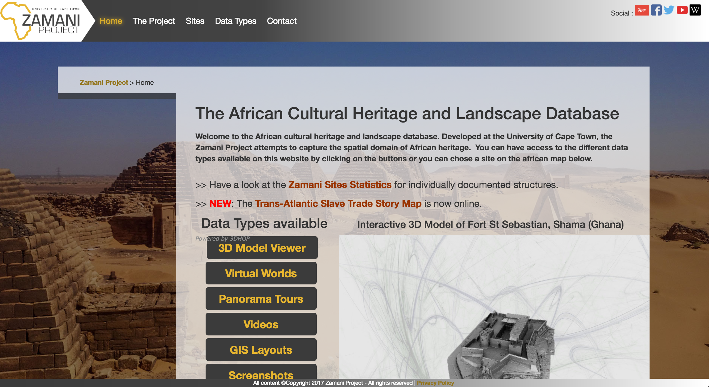
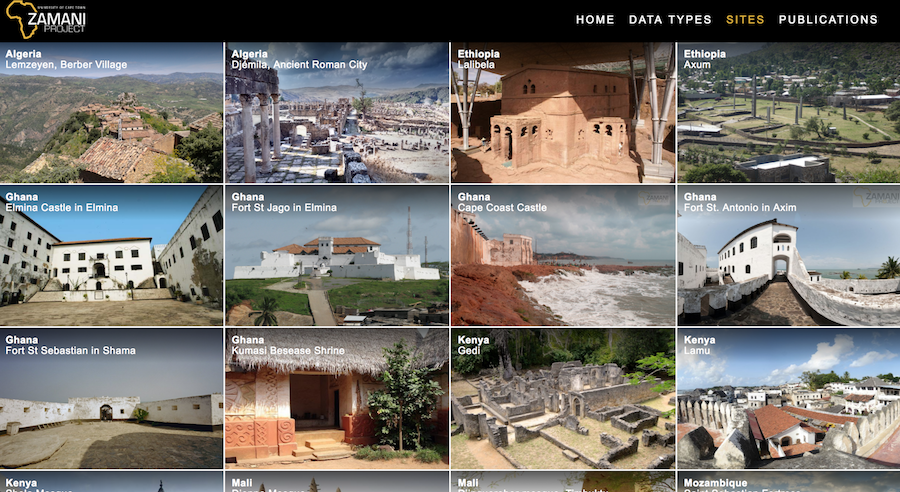

The Zamani Project
is a 3D scanning non-profit that focuses on collecting 3D and visual data of African heritage sites. During my time with Zamani, I redesigned and responsively developed the project website to better present the 3D models and data to drive up donations and views during a time of financial stress.
Backend: Contao CMS Frontend: HTML5, raw CSS3, Javascript
LIVE WEBSITE


ORIGINAL HOME PAGE
UPDATED SITES PAGE
 SAY HELLO
SAY HELLO